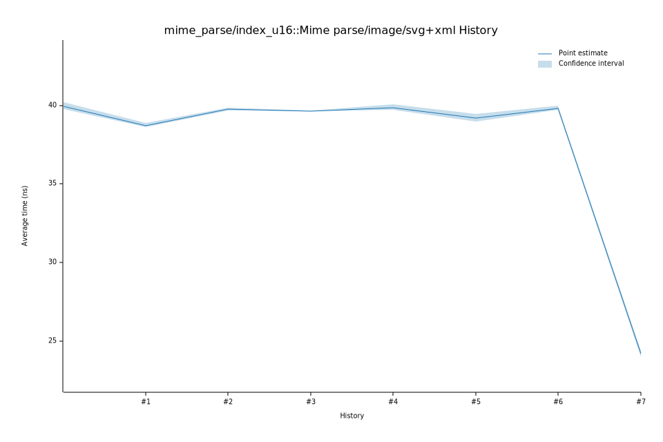

# 52025-10-14T16:04:27-07:00
|
Lower Bound |
Estimate |
Upper Bound |
| Value: |
38.96ns |
39.17ns |
39.44ns |
| Throughput: |
318.25MiB/s |
316.48MiB/s |
314.37MiB/s |
| Change in Value: |
+5.2490% |
+9.2306% |
+13.181% |
| Change in Throughput: |
-4.9872% |
-8.4506% |
-11.646% |
No change in performance detected.
# 42025-10-14T15:55:28-07:00
|
Lower Bound |
Estimate |
Upper Bound |
| Value: |
39.72ns |
39.87ns |
40.09ns |
| Throughput: |
312.13MiB/s |
310.97MiB/s |
309.22MiB/s |
| Change in Value: |
+0.2413% |
+1.0576% |
+2.1307% |
| Change in Throughput: |
-0.2407% |
-1.0465% |
-2.0862% |
No change in performance detected.
# 32025-10-14T15:35:40-07:00
|
Lower Bound |
Estimate |
Upper Bound |
| Value: |
39.62ns |
39.63ns |
39.66ns |
| Throughput: |
312.92MiB/s |
312.81MiB/s |
312.63MiB/s |
| Change in Value: |
-1.8827% |
-0.8293% |
-0.0895% |
| Change in Throughput: |
+1.9188% |
+0.8362% |
+0.0896% |
No change in performance detected.
# 22025-10-05T14:43:16-07:00
|
Lower Bound |
Estimate |
Upper Bound |
| Value: |
39.67ns |
39.74ns |
39.85ns |
| Throughput: |
312.54MiB/s |
311.95MiB/s |
311.14MiB/s |
| Change in Value: |
+0.2561% |
+1.7285% |
+3.1349% |
| Change in Throughput: |
-0.2555% |
-1.6991% |
-3.0396% |
No change in performance detected.
# 12025-10-05T13:01:55-07:00
|
Lower Bound |
Estimate |
Upper Bound |
| Value: |
38.60ns |
38.72ns |
38.90ns |
| Throughput: |
321.15MiB/s |
320.23MiB/s |
318.71MiB/s |
| Change in Value: |
-2.9232% |
-1.7510% |
-0.2509% |
| Change in Throughput: |
+3.0113% |
+1.7822% |
+0.2515% |
No change in performance detected.
# 02025-10-05T13:00:12-07:00
|
Lower Bound |
Estimate |
Upper Bound |
| Value: |
39.77ns |
39.96ns |
40.21ns |
| Throughput: |
311.70MiB/s |
310.26MiB/s |
308.35MiB/s |